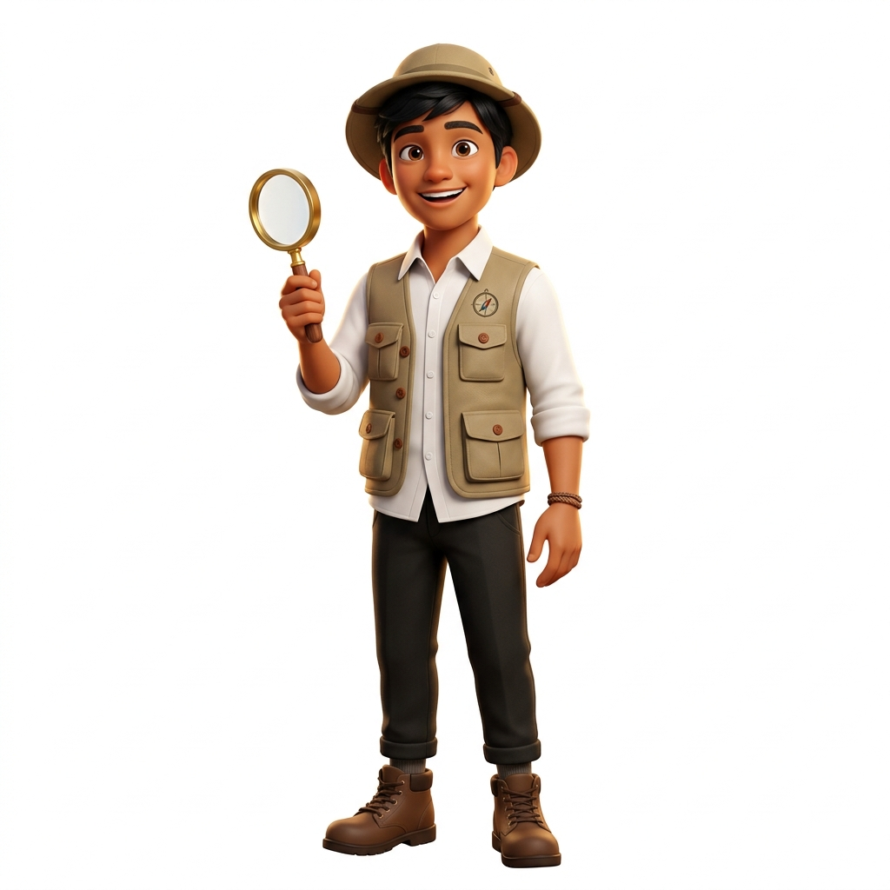

Capaian & Tujuan
Pemantik Observasi
Jelajah 6 Misi LHO
Catatan & Cetak PDF
Word Search Ilmiah
Penyusun Media
Ayo jadi Peneliti Cendekia dan selesaikan 6 zona ekspedisi untuk menguasai Teks LHO!
Temukan 7 istilah ilmiah tersembunyi di dalam papan huruf!
Pernahkah kamu melihat dua orang bercerita tentang hal yang sama, tetapi ceritanya berbeda jauh karena dibumbui perasaan pribadi dan prasangka?
Dalam dunia keilmuan, informasi seperti itu sangat berbahaya! Dunia sains dan kehidupan nyata membutuhkan Fakta yang Objektif—fakta yang bersumber dari pengamatan nyata di lapangan, dapat dibuktikan secara ilmiah, dan tidak memihak.
Ikuti 4 langkah seru ini untuk menguasai materi Teks LHO:
Ketuk salah satu dari 6 pos misi di jalan setapak Peta Petualangan.
Baca ulasan konsep, coba tombol sorot struktur, dan simulator vokal.
Setiap pos yang selesai dipelajari akan menghadiahkan bintang prestasi.
Tuntaskan 6 pos untuk mendapatkan Sertifikat Kelulusan resmi dari Guru Pengampu!
Pelajari konsep ilmiah dan uji interaktif di bawah ini
Kumpulan seluruh rangkuman materi dari 6 zona Pulau Observasi yang telah kamu buka
Selamat datang di media pembelajaran interaktif berbasis petualangan digital. Media inovasi ini dirancang khusus untuk memfasilitasi pembelajaran Teks Laporan Hasil Observasi (LHO) yang kontekstual, saintifik, dan menyenangkan bagi peserta didik SMA.
Masukkan identitasmu agar tercatat pada Jurnal & Sertifikat Ekspedisi!
Diberikan secara terhormat kepada Peneliti Muda Berprestasi:
Telah berhasil menuntaskan seluruh 6 zona eksplorasi Teks Laporan Hasil Observasi (LHO) dengan predikat Sangat Baik: Penguasaan Hakikat & 3 Sifat Objektif, Pemilahan 3 Struktur Teks (Pernyataan Umum, Deskripsi Bagian, Deskripsi Manfaat), Penemuan Pokok Informasi Adiksimba (5W+1H), Penerapan Kaidah Kebahasaan Baku, 6 Tahap Penulisan Kerangka Kronologis/Spasial, Kreasi Buku Tempel (Scrapbook), serta Teknik Presentasi dengan Pengaturan Intonasi Vokal.
Masukkan 5 digit PIN Guru Anda untuk memantau kehadiran dan capaian ekspedisi peserta didik.
Mata Pelajaran: Bahasa Indonesia SMA (Fase E) • Tema: Game Petualangan Teks LHO
Hubungkan dengan Google Spreadsheet Pak Guru agar setiap siswa yang masuk dari HP/komputer masing-masing langsung tercatat secara live detik itu juga.
02. Game Petualangan Belajar Teks LHO/GoogleAppsScript_Paket2.gs
| No | Waktu Akses | Nama Peserta Didik | Kelas | Karakter Avatar | Zona LHO Selesai | Game Cari Kata | Status Petualangan | Aksi |
|---|
02. Game Petualangan Belajar Teks LHO/GoogleAppsScript_Paket2.gs/exec, lalu tempelkan ke kolom URL di Portal Guru!Ganti PIN keamanan portal pantauan Anda.